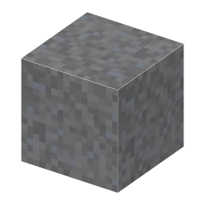

①子ども 鉛の鉱石。亜鉛の鉱石の近くで見つかる。
③大人 地下の熱い塩水（熱水）に溶けていた鉛や亜鉛が、硫黄を含む水と出会うと硫化物として沈殿する：Pb²⁺ + H2S → PbS + 2H⁺。だから方鉛鉱（PbS）と閃亜鉛鉱（ZnS）はいっしょにできる。
④ガチ 結晶は食塩と同じ立方体の形で、割るときれいなサイコロ形に割れる。古代エジプトでは方鉛鉱の粉を目のまわりに塗るアイライン（コール）に使った。
（作り方のレシピは無い：拾う・掘る・ほかの方法）
（このアイテムを使うレシピは無い）